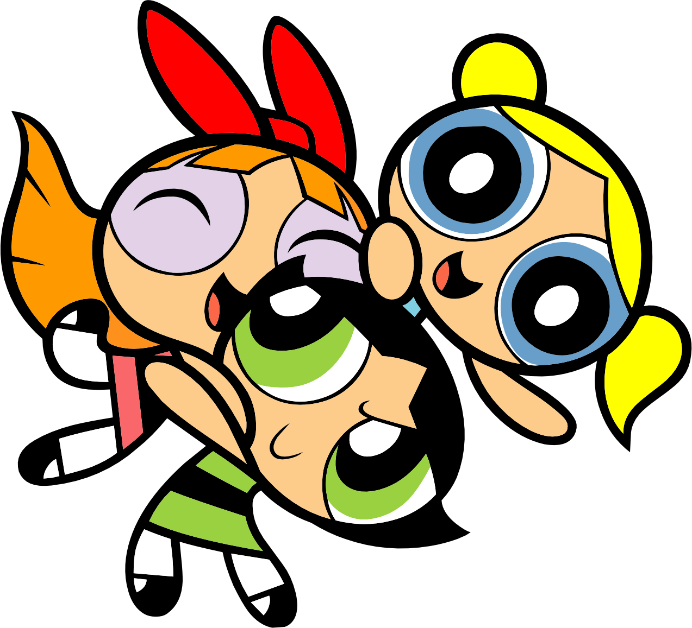
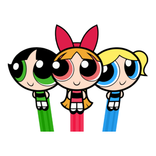

Curiosidades das Meninas Superpoderosas!

- O nome "Bubbles" ("Bolhinhas") combina com sua personalidade doce e alegre.
- Ela consegue entender e se comunicar com animais, algo praticamente exclusivo dela.
- É a mais emotiva das três e costuma fazer amizade até com criaturas consideradas assustadoras.
- Muita gente a vê como a mais fraca, mas alguns dos episódios mais memoráveis mostram justamente o contrário: quando ela fica brava, pode ser extremamente poderosa.
- Ela gosta de desenhar, de bichinhos de pelúcia e do polvo de estimação chamado Octi.
- Ela foi criada para ser o oposto da ideia de uma "menininha perfeita". É bagunceira, competitiva e adora desafios.
- É considerada a melhor lutadora corpo a corpo das três.
- Seu nome original, "Buttercup", é uma flor, mas sua personalidade é tudo menos delicada.
- É a única que muitas vezes prefere agir primeiro e pensar depois, o que frequentemente causa problemas.
- Apesar da aparência durona, vários episódios mostram que ela se importa muito com as irmãs e fica chateada quando acha que decepcionou alguém.
- O laço vermelho dela foi inspirado em penteados e acessórios que o criador via em desenhos antigos.
- Entre as três, é a única que frequentemente cria estratégias e planos antes de entrar em uma luta.
- Em algumas versões e episódios, ela demonstra ter poderes de gelo e sopro congelante, algo que as irmãs raramente usam.
- Ela é chamada de "a cola que mantém o grupo unido" porque costuma resolver as brigas entre as irmãs.
- Apesar de parecer perfeita, seu maior defeito é ser um pouco mandona e querer que tudo saia exatamente como planejou.
Voltar para a página inicial